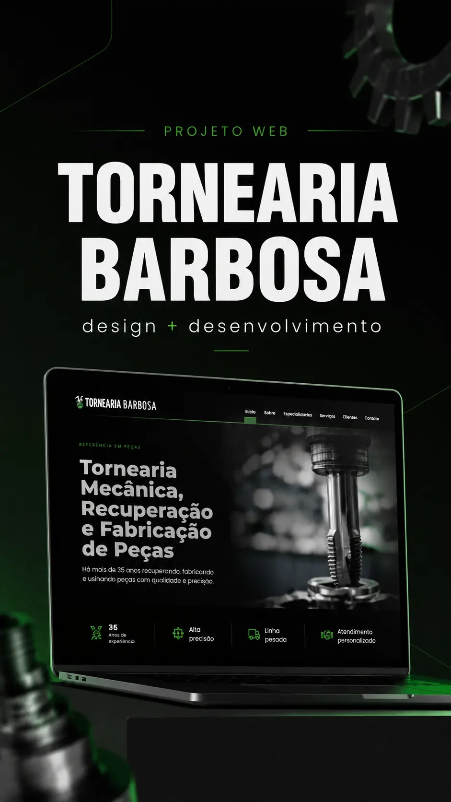

CASE REAL · DESENVOLVIMENTO WEB01 / PROJETO PARA CLIENTE
Tornearia Barbosa
Como apresentar mais de 35 anos de experiência industrial em um site claro, profissional e preparado para ser encontrado.
Conhecer o estudo de caso ↗Desenvolvimento web / Projetos autorais / Aprendizado contínuo
Sou desenvolvedora web e fundadora da DAYSLUME. Este é meu espaço para mostrar o que construo, contar as decisões por trás dos projetos e compartilhar o que aprendo pelo caminho.
Do primeiro esboço ao produto em uso, cada projeto carrega decisões, tentativas e aprendizados. Explorar todos os projetos ↗

CASE REAL · DESENVOLVIMENTO WEB01 / PROJETO PARA CLIENTE
Como apresentar mais de 35 anos de experiência industrial em um site claro, profissional e preparado para ser encontrado.
Conhecer o estudo de caso ↗02 / PRODUTO DIGITAL · EM EVOLUÇÃO
Agendamentos com foco no dia a dia de profissionais autônomas e na simplicidade para clientes.
Conhecer o projeto ↗03 / PRODUTO DIGITAL · EM EVOLUÇÃO
Um catálogo digital que organiza produtos e facilita sua apresentação em um endereço próprio.
Conhecer o projeto ↗Nem toda ideia nasce pronta. Algumas ganham forma enquanto a gente aprende.
Conheça minha trajetória ↗Meu caminho une tecnologia, criação e vontade de transformar ideias em algo útil. Construo sites e produtos digitais, estudo novas possibilidades e aprendo com cada desafio real.
Sou fundadora da DAYSLUME, mas este espaço é pessoal: aqui estão as perguntas, as descobertas e o processo por trás do meu trabalho.
Quatro movimentos que atravessam meus projetos.
Entender o contexto antes de propor uma solução.
Organizar informação, fluxos e experiência.
Transformar decisões em interfaces que funcionam.
Testar, ouvir, ajustar e continuar evoluindo.
Textos, estudos e reflexões que acompanham minha prática. Um espaço para registrar processos, não apenas resultados. Visitar o caderno ↗
Uma reflexão sobre clareza, estrutura e o papel de um endereço próprio na internet.
Ler artigo ↗Sobre autonomia, canais digitais e a importância de construir além das redes sociais.
Ler artigo ↗Criei a DAYSLUME para desenvolver soluções digitais que conectam tecnologia às necessidades reais dos negócios. Este site conta minha trajetória; o site da empresa apresenta nossos serviços, produtos e entregas.
Conhecer a DAYSLUMEPara compartilhar ideias, acompanhar meu trabalho ou explorar uma colaboração, estes são meus canais.
Ver opções de contato ↗Procurando sites, sistemas ou soluções para seu negócio? Visite a DAYSLUME ↗